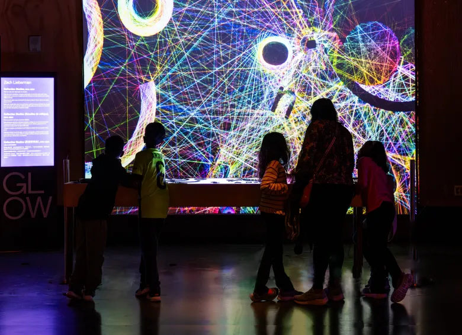

“Als ik in de spiegel kijk, dan zie ik dat mijn pupillen rond zijn.”
Ik vertrek vanuit mijn lichaam, mijn nulpunt, en kijk naar de wereld. Ik draai rond en zie het landschap voor mij verschijnen. Ik creëer een cirkel, waarbij mijn lichaam het middelpunt is, mijn blik de straal en de wereld de omtrek.
Vandaag de dag weten we dat het berekenen van de cirkel de straal x Pi is, maar voor het getal Pi werd berekend, was het een hele wiskundige klus om een cirkel oppervlak te berekenen. Pi = 3,14…. Met een oneindig aantal cijfers na de komma. Hoe rekenden ze zo’n ingewikkelde vorm uit in de oudheid? De queeste naar de berekening van de omtrek van de cirkel was iets dat vele oude Grieken bezighield. Eerst ontdekten ze dat de omtrek van een cirkel ongeveer 3 maal de straal was, maar dat was geen niet precieze berekening. De eerste wiskundige die heel dicht kwam bij het berekenen van een cirkel, was Archimedes.
Archimedes, een wiskundige uit het oude Griekenland (van ca. 287-212 v. CH.), word gezien als één van de grootste wiskundigen uit de Griekse oudheid. Zo riep hij Eureka! wanneer hij zijn massa in water uit het bad zag stromen en zo dichtheid van massa ontdekte. Daarnaast bestudeerde hij geometrische vormen waarvoor hij formules of algoritmes bedacht, waaronder ook de cirkel. Archimedes bedacht dat als hij vormen die zoveel mogelijk overeenkomstige punten hebben met de cirkel errond plaatste, hij uiteindelijk de cirkel wel zou kunnen berekenen. Zo begon hij met het plaatsen van een zeshoek binnenin de cirkel en zeshoek buiten de cirkel. Zo krijgt hij twaalf punten die op de omtrek van de cirkel liggen die hij kan berekenen. Vervolgens maakte hij er twee twaalfhoeken van en bekwam hij 24 overeenstemmende punten, enzovoort. Archimedes zag de cirkel niet meer als een cirkel, maar als een veelhoek, waarvan de punten zodanig dicht bij elkaar liggen, dat ze niet meer van elkaar te onderscheiden waren. Hij bedacht een ingewikkelde algoritmische formule en kwam hij heel dicht bij het getal Pi. Archimedes maakte gebruik van de ruimte buiten de cirkel om de cirkel zichtbaar te maken, net als de lichtstralen die vallen op een object het object vormen en dus zichtbaar maken.
Vandaag kennen we honderden wegen naar de cirkel, stuk voor stuk geworteld in het denken van Archimedes. Hoewel Archimedes veelhoeken hanteerde, zijn er talrijke alternatieve benaderingen denkbaar. Zijn methode illustreert dat het niet de exacte vorm centraal staat, maar de benadering ervan; het streven om iets alomvattends te vatten via voortdurend wisselende methoden. Elk uitgangspunt kan tot een cirkel leiden, mits de cirkel het beoogde resultaat is.
Dit is een gecodeerde cirkel: div class= ".cirkel-lijn" < style > .cirkel-lijn { width : 150px; height : 150px; border: 2px solid black; border-radius : 50% ; margin : 40px auto;
De Amerikaanse mediakunstenaar en docent Zachary Lieberman raakte geïnspireerd door een student die in zijn thesis alle bestaande algoritmes voor het tekenen van een cirkel verzamelde. Lieberman werd gevraagd om ook een contributie te schrijven en hij bedacht een manier om de cirkel te construeren door de afwezigheid van de cirkel in te vullen. Hij vertrok van een vierkant en koos twee punten op de omtrek van het vierkant, die hij vervolgens verbond met elkaar, maar enkel wanneer de lijn de nog niet bestaande cirkel niet aanraakte. Zo ontstond er een web van lijnen waar de cirkel niet was en een zwart gat in de vorm van een cirkel. Hij gebruikte het principe dat Archimedes ooit ontdekte waarbij de afwezigheid van de vorm de vorm juist vormgeeft. Lieberman creerde een computationeel algoritme die dit met verschillende objecten kon doen een creëerde het werk ‘Reflection Studies’ . Uitleg over interactief werk Ook de natuur vormt voordurend cirkels. De bomen maken cirkels jaar na jaar, een steentje valt in het water en het water vormt cirkels rond het middenpunt van de gevallen steen. De steen brengt vervolgens een lange tijd door in het water, dat door de stroming ervan het reliëf van de steen verwijderd en uiteindelijk rond vormd. Iets krijgt vorm door alles wat het niet is errond in te vullen. Door op een knopje te drukken, springt mijn computerscherm aan en vult de leegte van het zwart scherm in met alles wat het niet is; een zwart scherm. Deze wiskundige berekening zorgde voor een nieuw soort kijken met algoritmes die cijfers gebruiken die de vorm(ing) van een object blootstellen. Deze gedachte ligt aan het begin van de vorming van de digitale ruimte .
https://piedmontexedra.com/2024/12/fun-intriguing-interactive-installations-light-up-in-exploratoriums-glow